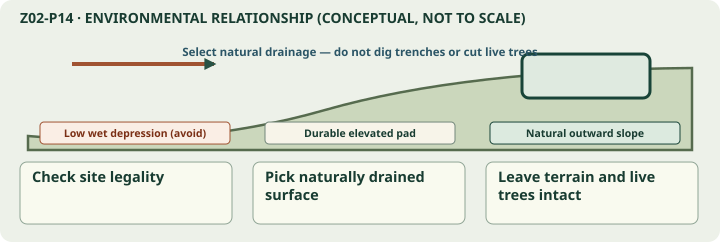

Z02-P14 · Shelter and housing · New manuscript
Choose durable legal surfaces without trenching or cutting live trees
Select natural high-and-dry camp pads that shed water without illegal terrain alteration or vegetation damage.
When it applies · Developed campgrounds and dispersed public-land campsites in forests, prairies and backcountry corridors.
Equipment · Local land-agency rules, map and durable groundsheet sized to the shelter footprint.

Actions
- Check unit camping rules and pitch on established sites, bare mineral soil, rock, gravel, dry grass or deep snow where permitted.[E03, E21, E22]
- Rely on natural elevated topography for drainage rather than digging trenches around tents, which damages soil, violates park rules and still fails in heavy runoff.[E21, E22, E04]
- Avoid cutting live branches, peeling bark or clearing meadow vegetation for improvised beds or poles unless facing a genuine life-safety emergency with no alternative.[E22, E03]
Failure recognition · Pitching in a soft shoreline depression and digging a drainage ditch that floods anyway while damaging fragile banks.[E21, E22, E04]
Verify · Confirm site legality, natural outward drainage slope and intact surrounding ground and live vegetation.[E03, E21, E22, ED]
Stop or change course · Move to a permitted, naturally drained durable surface whenever site legality, drainage or surface stability is uncertain.[E03, E04, E22]
Evidence and editorial notes
- E03 · NPS · Finding and Setting Up a Campsite (current web edition)
- Section: Finding a campsite · Conditions: Legal established or designated campsite
Support: Choose a durable legal site suited to the conditions. Campsite rules and physical risks vary by park.
Limitations: Established sites can still develop new hazard trees or flood risk after storms. · Conflicting evidence: None; requires live site inspection even at designated pads.
Editorial note: First gate of shelter site selection. · Specialist reviewer: Land management and wilderness shelter
Primary source · checked 2026-11-24 - E04 · NWS · Flood Safety: Key Points for Camping and Hiking (agency PDF)
- Section: Before and during camping; know your surroundings · Conditions: Stream valleys and runoff channels subject to flash flooding
Support: Choose higher ground away from water channels. Rain far upstream can drive rapid flooding.
Limitations: Dry streambeds and gentle swales can flood rapidly without local rainfall. · Conflicting evidence: None; aligns with NWS-FLOOD.
Editorial note: Core hydrological exclusion rule for shelter placement. · Specialist reviewer: Emergency management and hydrology
Primary source · checked 2026-11-24 - E21 · USDA Forest Service · Know Before You Go: Camping (current web edition)
- Section: Know Before You Go: Camping > Site Selection and Safety · Conditions: Dispersed and developed National Forest camping
Support: Verify site legality, distance from water, wildlife food-storage rules, and weather exposure; leave fragile vegetation undisturbed and avoid digging drainage trenches where prohibited.
Limitations: Dispersed camping rules vary sharply by forest and wilderness designation. · Conflicting evidence: Prohibits legacy trenching practices that damage soils and still fail in heavy runoff.
Editorial note: Replaces obsolete ditch-digging advice with slope/drainage site selection. · Specialist reviewer: Land management and wilderness shelter
Primary source · checked 2026-11-24 - E22 · NPS · Leave No Trace Seven Principles (current web edition)
- Section: Principle 2 > Travel and Camp on Durable Surfaces · Conditions: Campsite selection and shelter setup on public lands
Support: Pitch shelters on established pads, rock, gravel, dry grass, or snow rather than fragile meadows or saturated shorelines; do not alter terrain or cut live vegetation for shelter frames.
Limitations: Deadfall shelter construction is inappropriate in high-use or protected zones except genuine life-safety emergencies. · Conflicting evidence: Restricts destructive improvised shelter building during routine trips.
Editorial note: Separates lawful low-impact practice from emergency improvised cover. · Specialist reviewer: Land management and wilderness ethics
Primary source · checked 2026-11-24
Source lineage · NPS Leave No Trace and USFS camping; new manuscript · Classification · New manuscript.